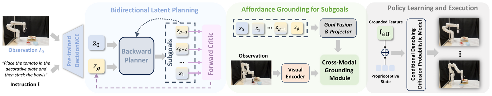
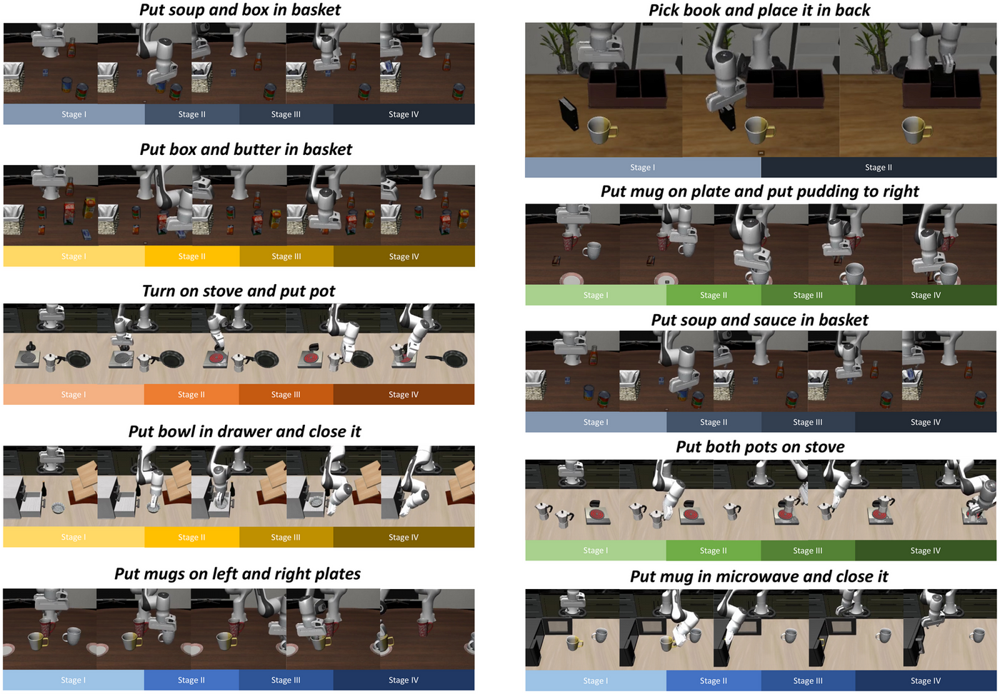
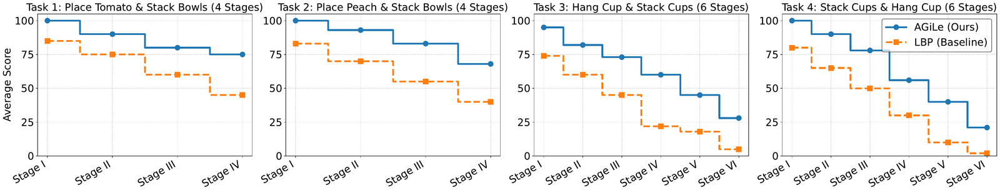

The robust execution of long-horizon manipulation tasks remains a central challenge in embodied intelligence, requiring both coherent high-level planning and reliable low-level control. Existing approaches face two critical limitations: the accumulation of prediction errors in subgoal planning, which compounds deviations over time; and the planning-execution gap, where abstract high-level plans fail to be grounded in the continuous perception-action space. To address these challenges, we propose a unified framework, Affordance-Grounded Bidirectional Latent Planning (AGiLe).
AGiLe introduces a bidirectional latent planning mechanism that jointly optimizes a backward planner and a forward critic. The backward planner generates goal-directed subgoals from the final objective, while the forward critic assesses their reachability, ensuring temporal robustness through sustained consistency over long horizons. AGiLe further bridges the planning-execution gap by using affordance as structural guidance, grounding abstract subgoals into dense, pixel-level visual affordances that drive action. This enhances spatial robustness, letting the system adapt to semantic and visual distractors. Across simulation and real-world settings, AGiLe significantly outperforms strong baselines, achieving an 8.5% improvement over prior state-of-the-art methods.

Overview of AGiLe. A backward planner and forward critic produce a temporally consistent subgoal plan in latent space; affordance grounding then translates each abstract subgoal into dense pixel-level cues that drive low-level action.

Evaluated on the LIBERO-LONG benchmark (10 long-horizon tasks, 50 demos each) and four real-world xArm6 tasks of four and six sub-stages.

Real-world rollouts. AGiLe maintains stage-level consistency across long multi-step instructions, outperforming the strongest planning baseline (LBP).
AGiLe executing long-horizon tasks on a real xArm6, planning and grounding each sub-stage from a single language instruction.
@inproceedings{chen2026agile,
title = {AGiLe: Learning Robust Long-Horizon Manipulation via
Affordance-Grounded Bidirectional Latent Planning},
author = {Chen, Zixuan and Feng, Xiangrong and Shi, Jieqi and
Shao, Lin and Huo, Jing and Gao, Yang},
booktitle = {Proceedings of the IEEE/CVF Conference on Computer Vision
and Pattern Recognition (CVPR)},
year = {2026}
}Supported in part by the New Generation Artificial Intelligence National Science and Technology Major Project (2025ZD0122902), NSFC (62192783, 62276128, 62506153), Jiangsu Science and Technology Major Project (BG2025035), the Fundamental Research Funds for the Central Universities (KG202514), and the Collaborative Innovation Center of Novel Software Technology and Industrialization.